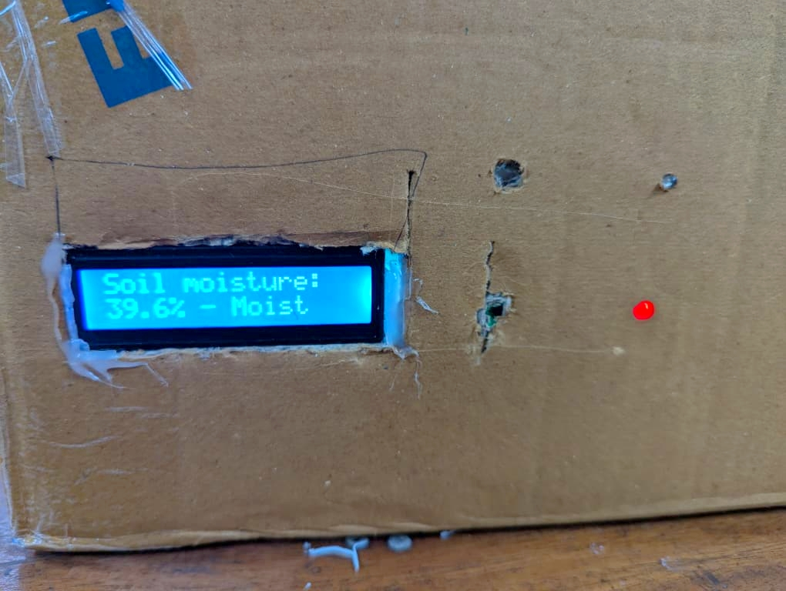

Design
Planned the arrangement and interaction of the system components.
FEATURED PROJECT · 01
A sensor-based prototype exploring soil moisture monitoring, LCD feedback, and relay-controlled water delivery.

The Soil Moisture Monitoring System was developed as an embedded systems project exploring the use of sensors, electronic control, and feedback mechanisms in a practical monitoring application.
The prototype includes an LCD for displaying measurement information and a relay-based interface for controlling pump operation. The design also incorporates an ultrasonic sensor, whose specific role should be described according to how it was implemented in the system.
My contribution focused on system design, component assembly, and simulation. These activities helped me explore the relationship between sensing, decision-making, and actuation in an embedded system.
Monitoring soil conditions can help provide information about when plants may require water. A sensor-based system can support this process by collecting measurements and presenting them in a form that is easier to observe and interpret.
The purpose of this project was to explore a monitoring and irrigation concept that combines measurement, user feedback, and pump control. The system was designed to investigate how electronic components can work together in a practical agricultural application.
Connecting sensor information with a visible display and a controlled water-delivery system.
The system combines computing, sensing, display, switching, and fluid-delivery components.
I contributed to the design and assembly of the monitoring system, with additional involvement in simulation.
Planned the arrangement and interaction of the system components.
Worked on bringing the electronic and physical components together.
Explored the system behavior through simulation as part of the development process.
Identified the major parts of the monitoring and control system and considered how they would interact.
Used simulation as part of the design process to explore component behavior and system logic.
Assembled the components and worked on connecting the sensing, display, switching, and pumping elements.
Observed the prototype behavior and identified areas requiring further testing, calibration, or improvement.
The project provided practical experience in combining sensing, display, switching, and pump-control concepts within an embedded system prototype.
Through the design, assembly, and simulation activities, I developed a better understanding of how hardware components must be selected, connected, and coordinated to support a practical system objective.
Further testing would be needed to document the system's measurement accuracy, pump response, reliability, and overall performance.
Integrating multiple hardware components into a single prototype requires attention to wiring, component compatibility, system logic, and physical assembly.
Potential areas for improvement include calibrating the moisture measurements, improving the physical enclosure, documenting the pump-control logic, and testing the system under different operating conditions.
A future version could include more structured data logging, clearer system feedback, and additional testing to evaluate the reliability of the monitoring and irrigation process.